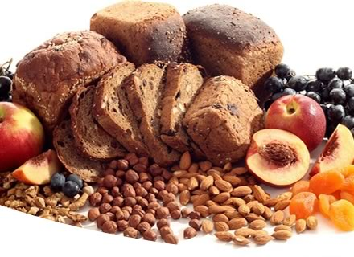

Heart disease
Preventative diet and lifestyle advice in order to minimise risk of disease progression
Weight management
Personalised weight loss programs under medical supervision

Food Intolerance
Diagnosis and treatment of food intolerances
Irritable Bowel Syndrome
Effective diet based treatment to resolve distressing symptoms of this very common disorder
Menopause/PCOS
Evidence based use of diet and supplements to improve hormone related problems
Diabetes
Diet based reversal of Type II diabetes or improvement of blood glucose control